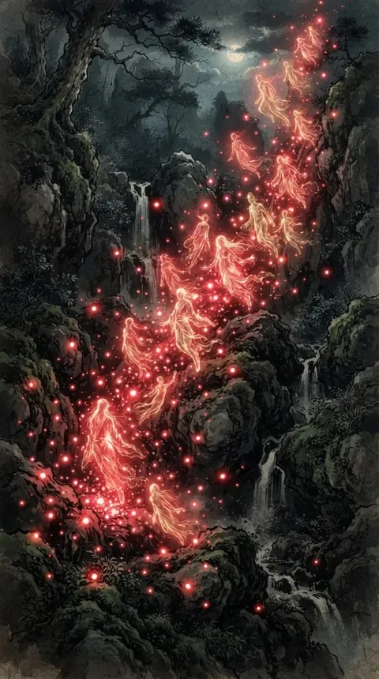

剣から生まれた神々古事記の神々 其の三十
伊耶那岐が十拳剣で火の神・迦具土神の首を斬ると、剣についた血から八柱の神が生まれました。
まず知りたい疑問：剣から生まれた神は何柱？
古事記と、名前の意味
- 剣の先の血が湯津石村（いわむら）に飛び散って、石析神（いわさくのかみ）・根析神（ねさくのかみ）・石箇之男神（いわつつのおのかみ）
- 剣の根もとの血から、甕速日神（みかはやひのかみ）・樋速日神（ひはやひのかみ）・建御雷之男神（たけみかづちのおのかみ）。建御雷之男神の別名は建布都神・豊布都神
- 柄にたまり、指のあいだから漏れ出た血から、闇淤加美神（くらおかみのかみ）・闇御津羽神（くらみつはのかみ）
- クラは谷、オカミは水をつかさどる神で、「龗」の字を竜の意とみて、泉にすむ竜蛇神とする説があります
- タケミカヅチの「ミカ」は御厳（みいか）＝いかめしい、「チ」は神霊とする説があります
- 建御雷之男神は、のちに鹿島神宮の祭神とされました（古事記・日本書紀には鹿島との結びつきは書かれていません）。奈良時代には、春日神社（今の春日大社）の祭神の一柱にも迎えられました
よくある疑問
剣から生まれた神は何柱？
剣の先の血から石析神・根析神・石箇之男神、剣の根もとの血から甕速日神・樋速日神・建御雷之男神、柄から指の間に漏れた血から闇淤加美神・闇御津羽神。あわせて八柱です。
建御雷之男神はどこに祀られているの？
鹿島神宮の祭神とされています。奈良時代、藤原氏ゆかりの春日神社（今の春日大社）の祭神の一柱にも迎えられました。
同じ場面の神さま（神生み）

イメージ画
1分で見る
1分の動画は
12月8日 20時に公開します
12月8日 20時に公開します
出典と画像
参考：國學院大學「古事記ビューアー」「神名データベース」
写真：鹿島神宮 拝殿 撮影 Saigen Jiro／Wikimedia Commons／CC0。9:16に切り出して使用
写真以外の画像はイメージです。
動画のナレーション：VOICEVOX:青山龍星